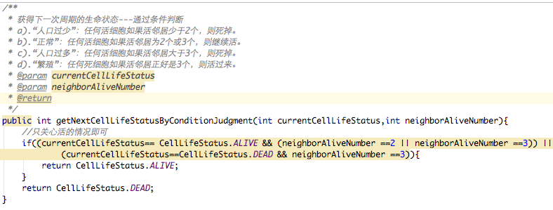
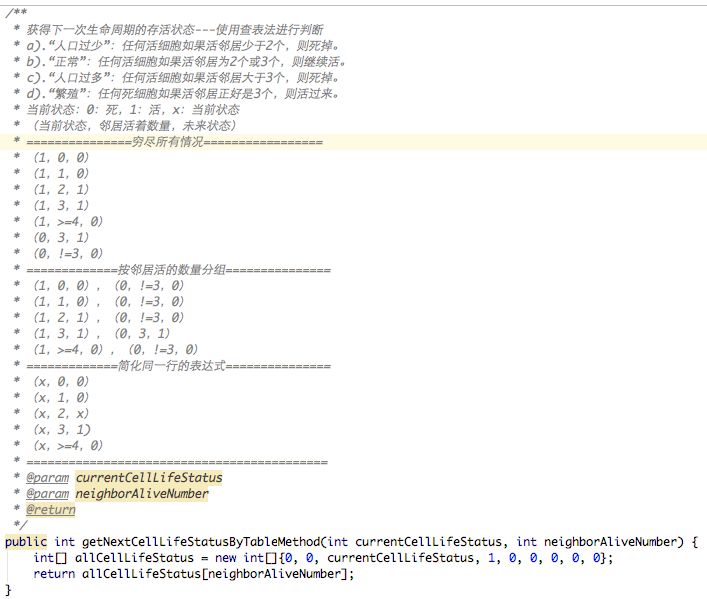

参与代码静修日活动
- 时间：2017-02-18 9:30-17:30
- 地点：成都Thoughtworks
- 讲师：李小波
Code Retreat是一个一天的集中练习的活动，专注于软件开发和设计的基础。
让开发人员远离完成工作的压力，提供专注练习的机会，CodeRetreat 这种形式已被证明是提升编程技能的有效方法。通过练习模块化和面向对象的基本原则，开发人员可以提高他们编写代码的能力并使变更成本最小化。参与活动收货不少，如下：
- 知道了一个好玩的游戏—生命游戏
- TDD要在平时工作中使用，以提高代码质量—推荐阅读《驯服烂代码》
- 平时使用的工具要深入了解，有好多好的使用方式，要学会使用，不要依赖键盘和触摸板，强化快捷键—不做鼠标党
- 一位匠友分享的生命游戏中关键算法—获取下一周期生命状态，通过查表法，化繁为简，顿时感觉数组十分强大。如下图一表示普通做法，图二表示查表法实现:
- 编写自说明代码，保证代码清晰易懂—推荐阅读《代码大全》
- 也体验了不同编程语言对同一需求的不同实现，大开眼界
从不同结对的伙伴中，能学到不同人的优点


链接：